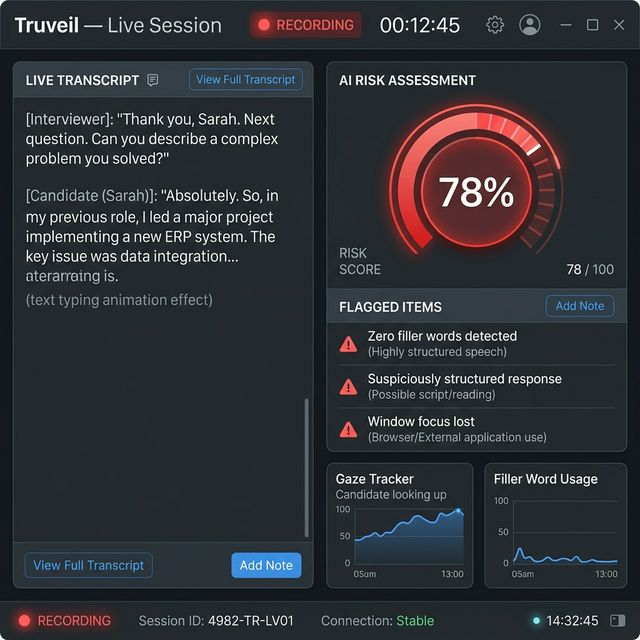
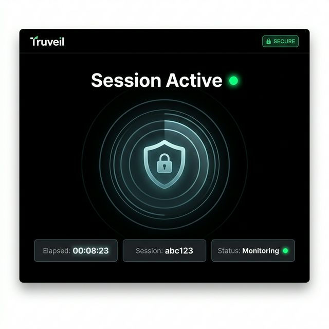

Review the interview, not a black-box verdict.
Live transcript, session events, and explainable AI-assistance risk in one focused recruiter workspace.

Signal arrives live. Context stays attached.
Transcript evidence and monitored behavior remain separate, so interviewers can understand what happened without treating a score as truth.
Set policy. Share code. Stay in control.
- 01
Configure the session
Select allowed meeting tools and restricted destinations before the candidate joins.
- 02
Candidate consents
Truveil Secure explains the session check, requests microphone access, and joins with a short-lived code.
- 03
Review live evidence
See transcript health, monitored foreground changes, and advisory response-risk signals as they happen.
- 04
Export a careful report
The report preserves transcript and event evidence while making clear that the assessment is probabilistic.

Strong verification should still be understandable.
Candidates consent before monitoring begins. Raw fallback audio is deleted after transcription. Reports retain evidence for 30 days by default and can be deleted sooner.
- Explicit session consent
- Clear restricted-site policy
- No hidden certainty claims
- Desktop-only enforcement disclosed honestly